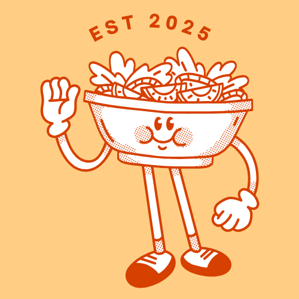

<footer class="footer">
    <div class="footer-logo">
        <figure>
            
        </figure>
    </div>

    <nav class="footer-nav">
        <div class="icons">
            <ul>
                <li><a target="_blank" href="https://achecks.org/achecker#wcag21aa-mobile,https://kitchenette-adiazrom.netlify.app/"></a></li>
                <li><a target="_blank" href="https://achecks.org/achecker#wcag2aa,https://kitchenette-adiazrom.netlify.app/"></a></li>
                <li><a href="" class="instagram" aria-label="Instagram"></a></li>
            </ul>
        </div>
        <div class="footer-links-about">
            <ul>
                <li>2024-2025 Alba Diaz Romero | &copy; All Rights Reserved</li>
                <li><a href="">Privacy Policy</a></li>
                <li><a href="">Terms and Conditions</a></li>
            </ul>
        </div>
    </nav>   
</footer>